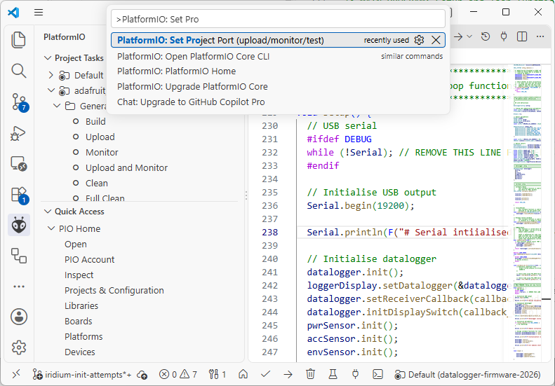
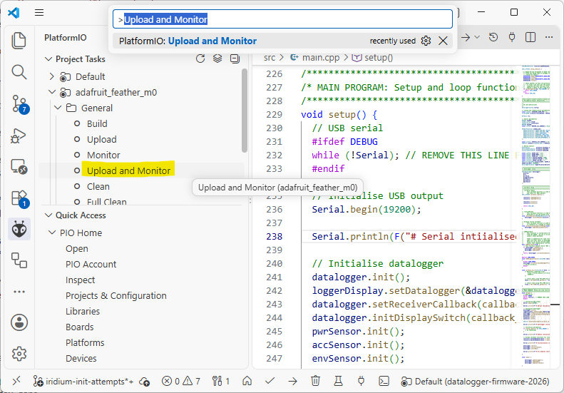
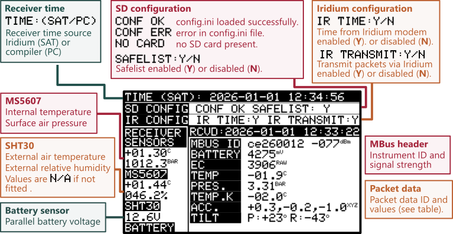
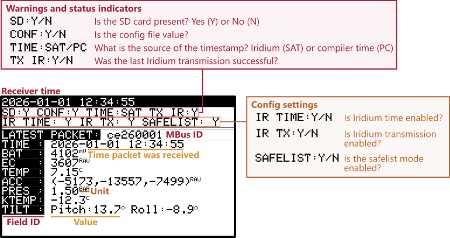

Firmware#
Firmware for the 2026 version of the receiver is stored on GitHub here: chilcardiff/datalogger-firmware-2026. This version of the datalogger firmware was developed using Visual Studio Code and PlatformIO as the development environment.
Unlike previous versions of the CHIL datalogger firmware, it is designed to work with all types of CHIL instruments and is backwards compatible with the 2023 instrument packet formats.
Programming#
To begin, open the datalogger case and connect the datalogger to a computer with a USB Type A to USB Micro cable. The USB connection inside the datalogger case is located on the Adafruit Feather M0 Adalogger board, highlighted in Figure %s.
Open the datalogger-firmware-2026 folder in Visual Studio Code. Once PlatformIO has finished initialising, select the serial port associated with the datalogger by pressing CTRL + SHIFT + P and typing Set Project Port.
Tip
If you aren’t sure which COM port is associated with the datalogger, open the Device Manager (Windows Key + R) and run devmgmt.msc.
Find the Ports (COM & LPT) section, remove the USB cable to the datalogger and replace it to identify which port is used.


Fig. 69 Selecting the project COM port in PlatformIO.#


Fig. 70 Building, uploading and opening a serial monitor in PlatformIO.#
Display (latest version)#
The layout of the latest version of the receiver display is shown in Figure 71. It shows information regarding the SD card configuration, Iridium configuration, environmental sensors on the receiver and data from the latest packet to be received.

Fig. 71 Components of the CHIL Datalogger display (v2026b).#
Display (initial version)#
This version of the display was shipped with the v202605 version of the CHIL datalogger. It consists of four main components, the receiver time
Receiver time: The current timestamp used by the receiver.
Warnings: Indicates current status and functionality of key datalogger subsystems.
Config settings: Shows SD card configuration values.
Latest packet: Instrument ID and data from the last packet to be received.
These components are annotated in Figure 72 as a guide to interpreting the display while in the field.

Fig. 72 Components of the CHIL Datalogger display (v2026a).#